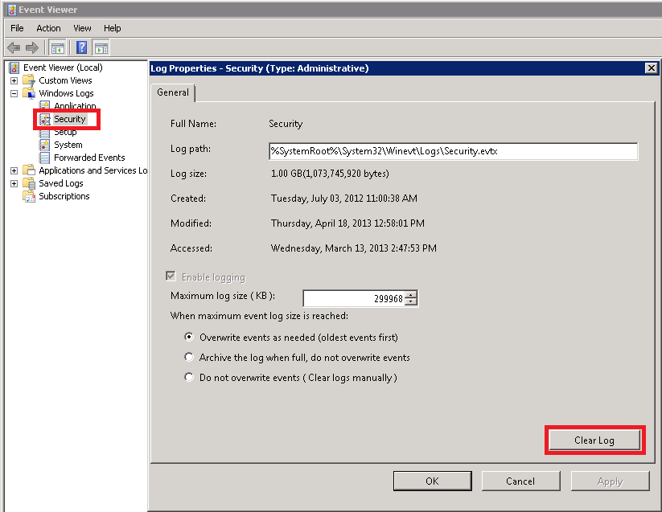

Unable to generate a report for File Server changes.
You encounter the following error:
<file server> error: Error processing log. Error details: Unknown error. Error
number: 0x80004005: -2147467259
The Security event log of the problematic server has been corrupted due to lack of free space on the system drive.
Please perform the following steps to resolve the issue:
- On the problematic server, check for enough free space on the disk where the Security event log is located (usually system drive).
- Start Event Viewer, right click the Security event log and select Properties.
- Click the Clear Log button.
- Reboot the problematic server.
